Dev log
What's new, what broke, what we learned
Newest first. Each post says what changed, shows it, and says what has not been checked yet. There is an RSS feed.
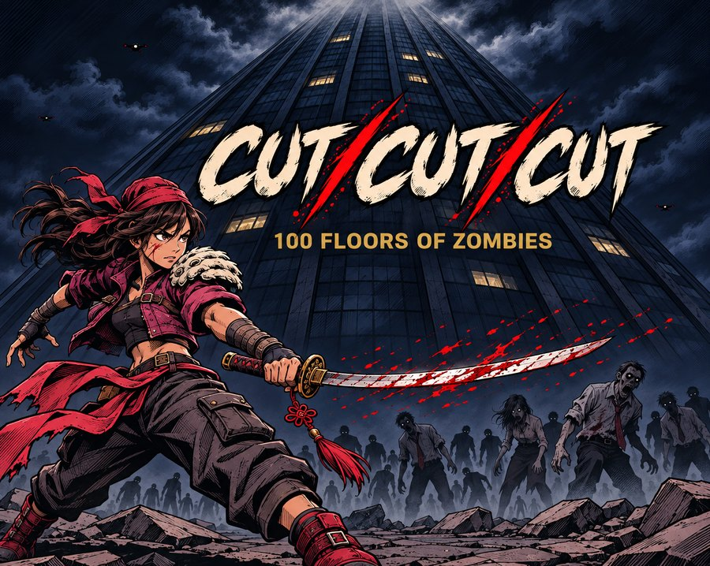
Looking for players
The beta needs people to break it. A list of where players gather, the trailer on TikTok, and a public itch.io page for the Android build, plus a clear picture of what an AI agent can and can't post on someone's behalf.
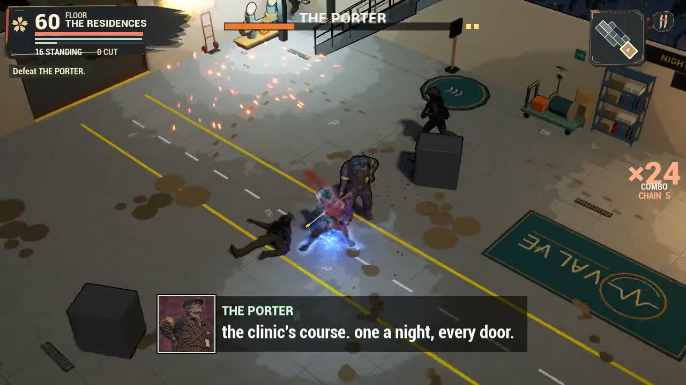
Every sound, from ElevenLabs
The owner asked for all of the game's sound to be made with ElevenLabs, in keeping with the lore. By the evening the tower had music, voices for every character, and a sound for nearly everything that happens in it, and films of the game had sound for the first time.
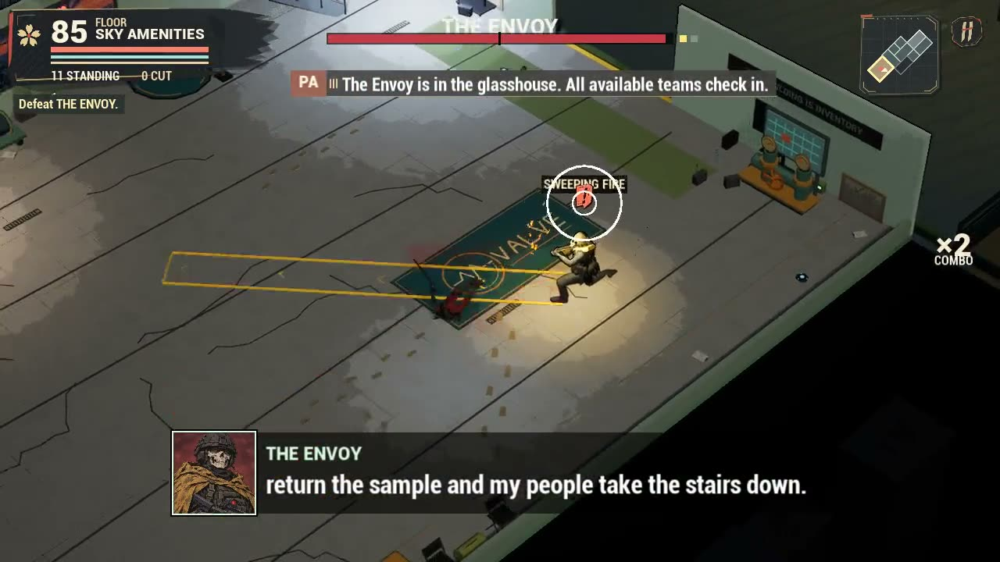
The Envoy, and every guardian in phrases
Sounds, a size check that found a broken build, and a long day on the Envoy that ended with the real reason his body kept vanishing. Then every guardian's fight is rebuilt from short mixed phrases, and a new build goes to TestFlight and Android.
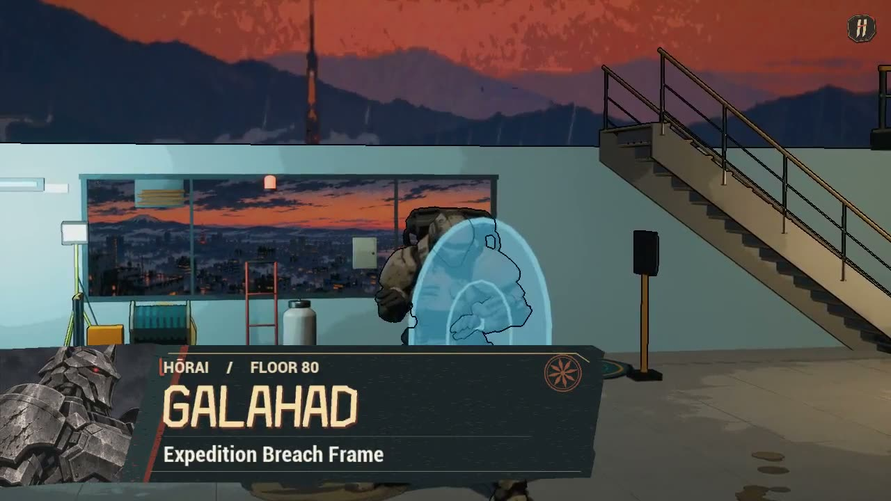
Full rooms, a new Galahad, and one black frame
The evening after the six endings. Every guardian's room is dressed to its story, Galahad is rebuilt from a drawing, the ultimate gets an impact frame and a proper landing, and the phone turns out to have been drawing a quarter of its pixels.
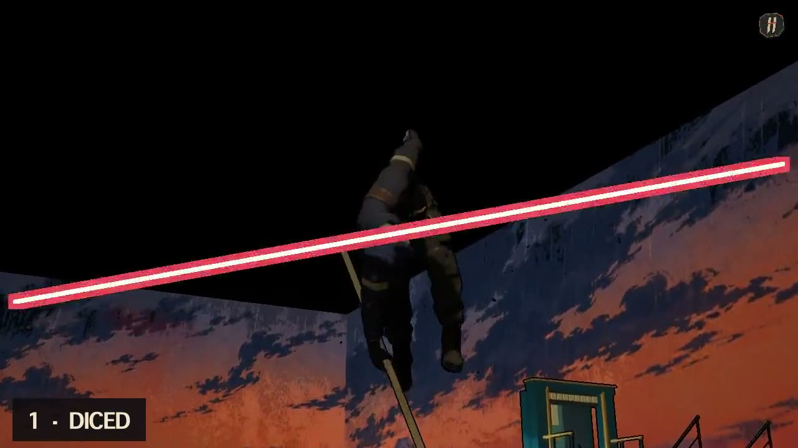
Six ways to finalise a guardian
This morning one boss had an ending of his own. By the afternoon every guardian but one shares six, dealt at random, and the building's PA has something to shout.
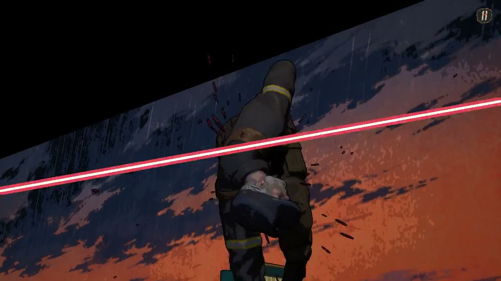
A tester, a finisher, and a build that was not there
Yesterday's TestFlight build never arrived, and this log said it had. Today it is really there, the first tester wrote back, and the Freight Porter got an ending of his own.
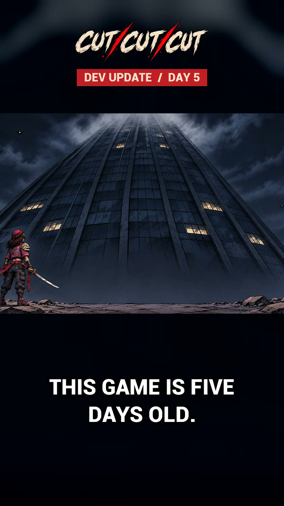
A dev update you can watch
The first video dev update is up: under two minutes on what the game is, where it stands and how it is being built. It lives on a new YouTube channel, Pondd Builds.
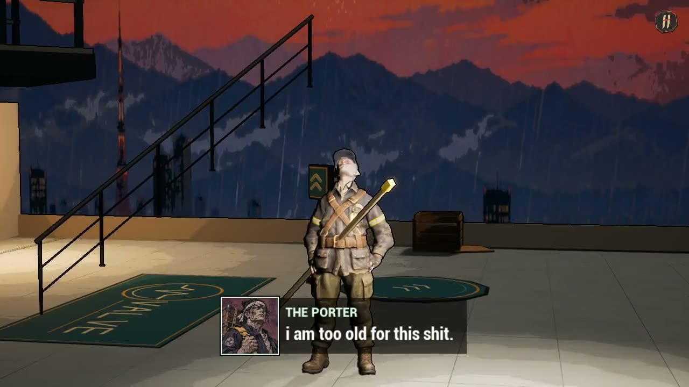
No more stand-ins: five guardians recast in a day
The Chair, the Conductor, the Freight Porter and the Pacer all got bodies and fights of their own, and the founder at the top got a face. Every one of the sixteen guardians is now properly cast.

The cast, photographed
For the end credits we want the people of the tower as if they were real. Four portraits have been turned into photographs, plus one of Rin mid-cut.

An animated intro, narrated by Rin
Seventy seconds that explain the premise, drawn as a cartoon and told in Rin's own dry voice. It also settled what Rin sounds like in the game.

Homura learns the Captain's forms
The Expedition's duellist now fights with eight real sword forms across three duels that get faster and harder. She escapes the first two. Her blade glows red.

Build 0.1 is on TestFlight
The first build reached Apple's testing service. It is one tester for now: the developer, on a new phone.
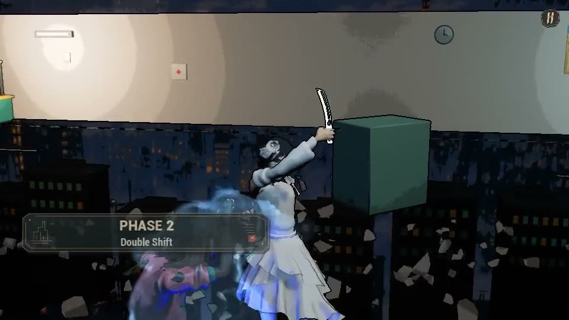
Two guardians get bodies of their own
Six of sixteen guardians were stand-ins on borrowed bodies. The Maintenance Chief and the Clinic's night nurse are the first two to be properly cast.

The first room teaches the next 99
Five clerks meet Rin in the lobby and the fight pauses while you try each move once: a slash, a combo, a roll, the Ultimate. Then the first card choice.
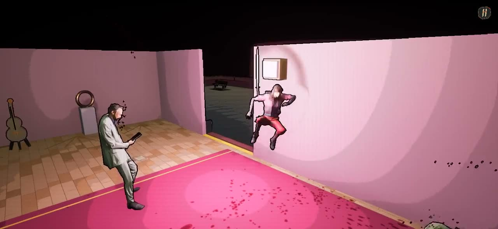
Rin's Ultimate: she kicks the sword
The Ultimate needed to feel like the end of an argument. Rin kicks her katana across the room. It took three passes in one afternoon to get it right.
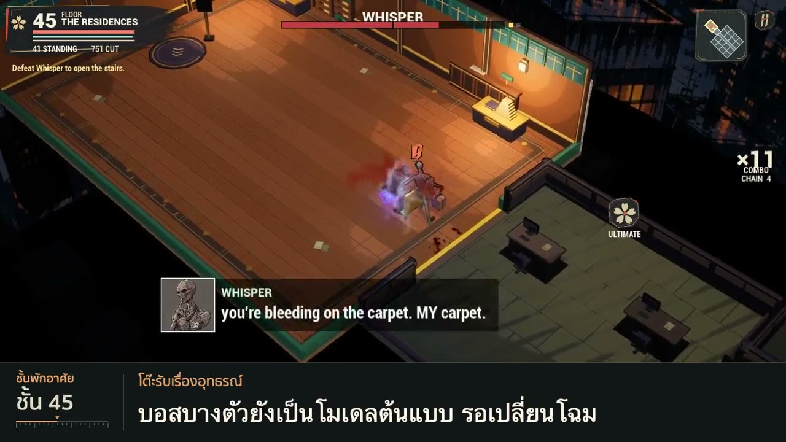
The showcase, narrated in Thai
Two films for the Thai developer community: the landscape showcase with a Thai voiceover, and a developer update told in Pondd's own voice.
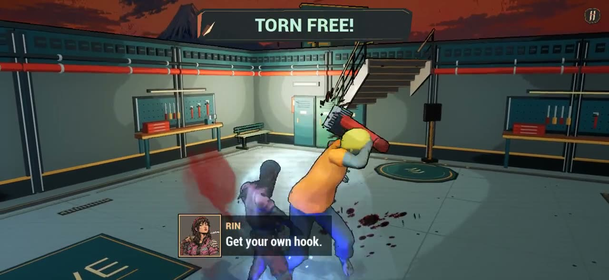
The whole tower: 100 floors, two endings, Endless
Fifteen minutes past midnight the climb was playable from the lobby to the rooftop garden, with a choice at the core, two endings and an endless mode. Then it was balanced.

Rin's deck: a poker hand is your power
Upgrades are playing cards. Five are in play, and the poker hand they make decides what Rin can do. It was designed and playtested on paper before any code.

It is called Cut Cut Cut
The game got its real name, a title screen, a reason for the tower, a running joke about the word "zombie", and a plan that runs all the way to release.
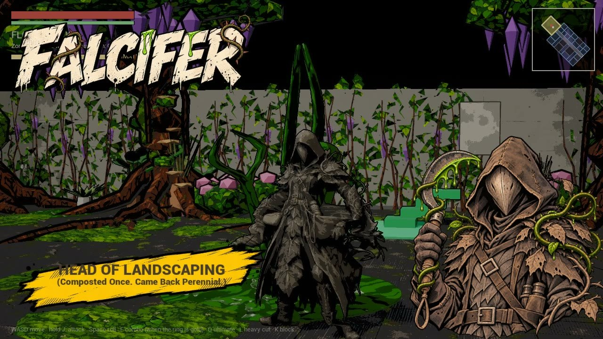
Floor 1 becomes a level
The first floor stopped being a test room. It got staff, a PA system, drops, a boss with a title card, and the thick-ink comic look the whole game now wears.

First playable: a samurai, a tower, one room at a time
The idea on the first night was small enough to finish: an isometric crawl up an office tower full of zombies. It was playable before midnight.